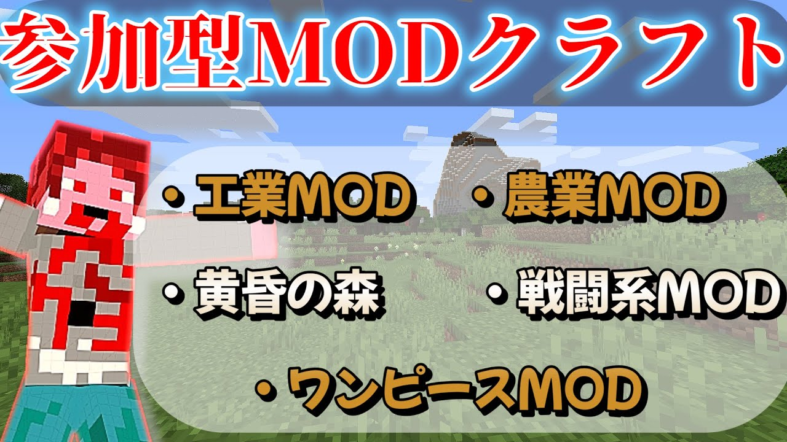

現在配信中でプレイしているMODサーバーです。
・ワンピースMOD
・メカニズム
・抜刀剣
・黄昏MOD
円滑な進行のためにDiscordへの参加をお願いします。
YouTubeで配信中の場合はコメント欄で参加したいとコメントをお願いします。
Discordにて参加したいとなーさん(naokoko)か管理者(choko1229)に伝えてください。
導入Mod等は下記してください。
ここにあるMOD以外の導入はご遠慮ください。
| MOD名 | 説明 | ダウンロード |
|---|---|---|
| FML | Modローダー | forge |
| Curios API | 前提MOD(黄昏の森で使用) | curseforge |
| Epic Fight | 戦闘の拡張MOD | curseforge |
| Farmer's Delight | 農業MOD | curseforge |
| Kotlin for Forge | 前提MOD | curseforge |
| Mekanism | メカニズム(工業MOD)の本体 | curseforge |
| Mekanism Additions | メカニズム(工業MOD)の公式アドオン | curseforge |
| Mekanism Generators | メカニズム(工業MOD)のエネルギー追加 | curseforge |
| Mekanism Tools | メカニズム(工業MOD)のツール追加 | curseforge |
| Mine Mine no Mi | ワンピースMOD | curseforge |
| Obfuscate | Epic Fightの前提MOD | curseforge |
| SlashBlade | 抜刀剣MOD | curseforge |
| Timeless and Classics Guns | 銃MOD | curseforge |
| The Twilight Forest | 黄昏の森MOD | curseforge |
| MOD名 | 説明 | ダウンロード |
|---|---|---|
| Inventory Profiles Next | インベントリ整理MOD | curseforge |
| libIPN | 整理MODの前提MOD | curseforge |
| Just Enough Items (JEI) | レシピMOD | curseforge |
| AppleSkin | 食料の詳細ステータスを表示する | curseforge |
| Better Advancements | 実績画面を大きくしてみやすくする | curseforge |